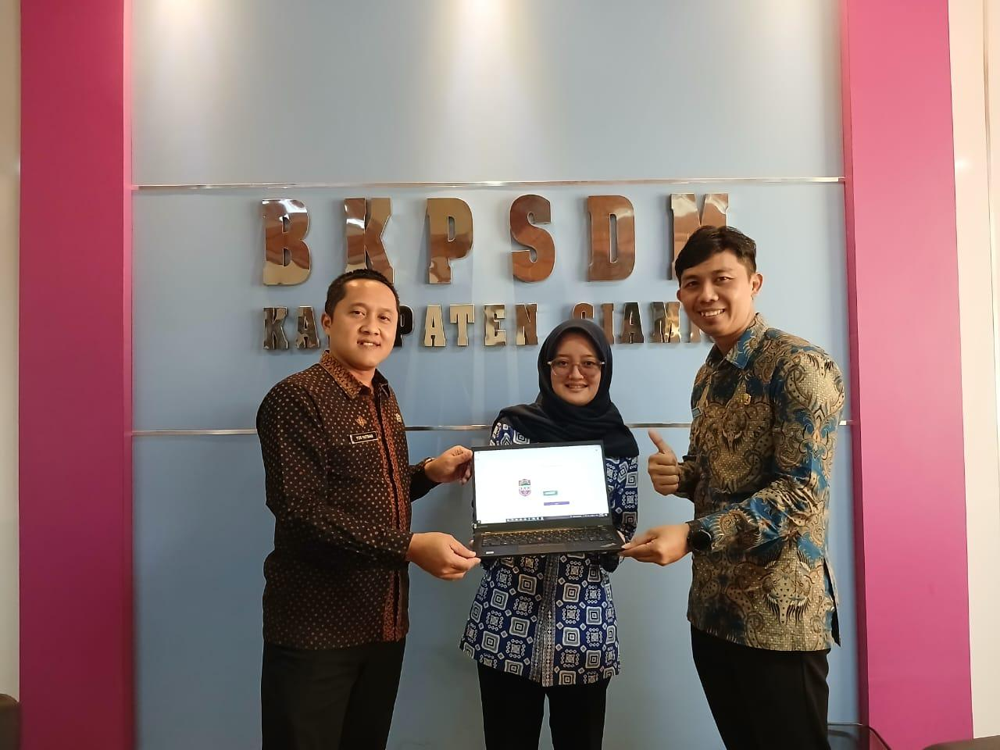
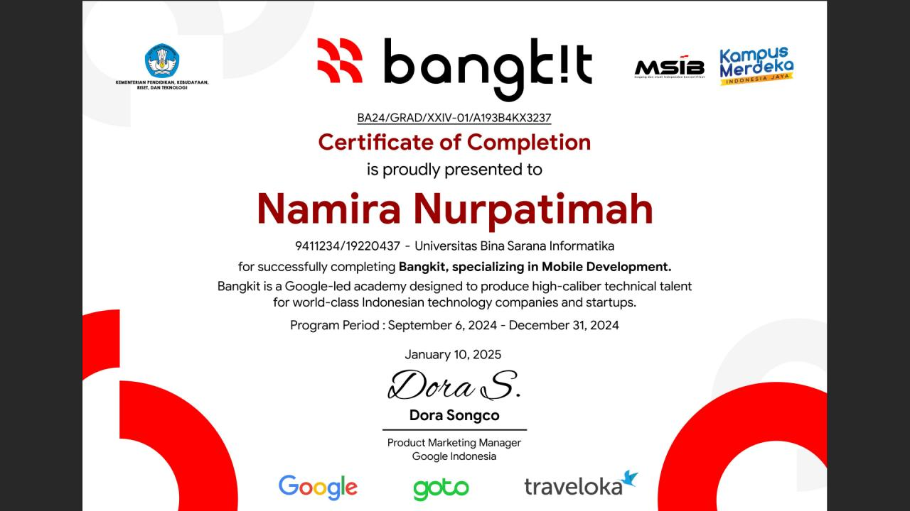

Technical & Interpersonal Skills
Bahasa Pemrograman
Framework & Tech
ERP, UI/UX & Tools
Soft Skills
Professional Experience

IT Support & Administrasi (Magang)
SEP 2025 - NOV 2025BKPSDM Kabupaten Ciamis
- Mengembangkan Sistem Informasi Penomoran Surat menggunakan PHP Native dan MySQL.
- Melakukan pemeliharaan, troubleshooting, instalasi OS Windows, serta perbaikan perangkat PC/komputer kerja instansi.
- Mengelola dan melakukan input data ASN.

Mobile Development Cohort & UI/UX Contributor
SEP 2024 - JAN 2025Bangkit Academy (Google, Tokopedia, Gojek, Traveloka)
- Merancang antarmuka UI/UX dan user flow menggunakan Figma sesuai Material Design Guidelines.
- Mengembangkan aplikasi Android menggunakan Kotlin dan Jetpack Compose.
- Berkolaborasi dengan tim lintas bidang untuk merampungkan capstone project.
Ecommerce Intern (PKL)
JAN 2021 - MAR 2021PT. Matahari Putra Prima Tbk • Cianjur, Jawa Barat
- Participated in a vocational high school internship program (PKL).
- Managed stock data entry and inventory using Microsoft Excel.
- Supported the team in organizing e-commerce product listings to ensure data accuracy.
Selected Projects
FERINA
Web Application
Sistem monitoring konsumsi TTD untuk remaja putri. Dilengkapi fitur reminder, riwayat konsumsi, skor kepatuhan, dan dashboard analitik.
RiceApp
Android Mobile App
Capstone Project Bangkit Academy. Mengimplementasikan desain UI/UX interaktif menggunakan Jetpack Compose.
SIBERKAT BJB
Web System
Sistem Informasi Pengarsipan Kredit. Platform berbasis web untuk optimalisasi pengelolaan data nasabah dan digitalisasi pengarsipan dokumen kredit.
Travel Al Hijaz Ciamis
Company Profile
Pengembangan portal web untuk publikasi informasi dan layanan perjalanan ibadah, mencakup pengerjaan front-end, setup hosting, serta manajemen DNS.
Klinik Hewan & Petshop
Veterinary System
Mengembangkan aplikasi web untuk mendukung pengelolaan informasi dan layanan pendaftaran klinik hewan.
Penomoran Surat Digital
Government Project
Membangun logika sistem dari dasar untuk otomatisasi tata kelola administrasi dokumen ASN di lingkungan BKPSDM Ciamis.
System Laundry Management
Academic Project
Aplikasi web manajemen operasional laundry berbasis arsitektur MVC. Memiliki fitur pencatatan transaksi pelanggan, penentuan paket layanan, pembaruan status pengerjaan, hingga kalkulasi total biaya otomatis.
Education
S1 Sistem Informasi
Universitas Bina Sarana Informatika • 2022 - 2026
Rekayasa Perangkat Lunak
SMKN 1 Cianjur • 2019 - 2022
Certifications
-
Uji Profisiensi ERP Odoo (Distinguished/Excellent)
PT Jidoka System Indonesia • Januari 2026
-
Aplikasi Android Intermediate
Dicoding Indonesia • 2024
-
Fundamental Aplikasi Android
Dicoding Indonesia • 2024
-
Member of Presenter LICOVBITECH
Politeknik LP3I • 2023